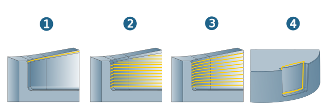
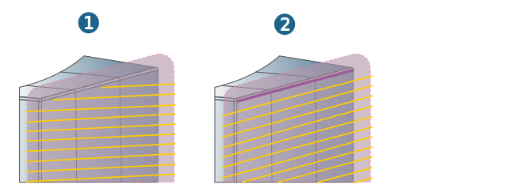
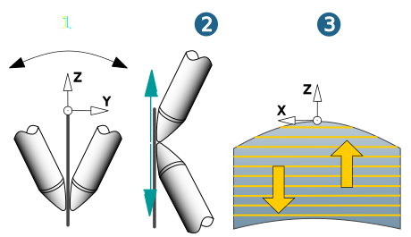
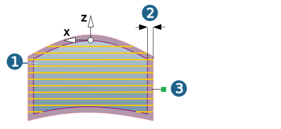
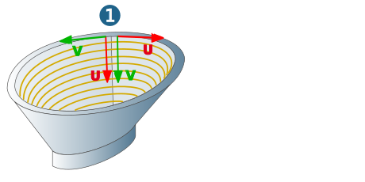
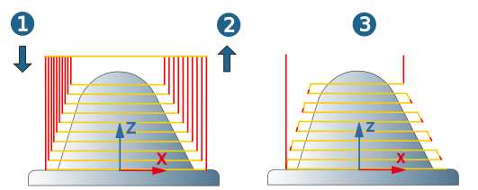

Strategy
Path mode
Determine the method to calculate the toolpath.
Select Curve on surface (1) if the generated toolpaths should be oriented to the path of the defined curves. The curves must lie on the surfaces to be machined.
You can use the Z-levels (2) option to generate toolpaths oriented to the path of the frame Z axis.
Select Iso mode (3) if the generated toolpaths should follow the path of the Iso curves.
Select Bounding only (4) to optimally machine the border areas of selected surfaces with a finishing operation.
|  |
Select Global drive shape if the toolpaths are to follow the shape of the drive surface. Use the Iso option to align the toolpaths to the direction of the Iso parameters (Iso U/Iso V) (1). Use Offset curve (2) to align the toolpaths to the path of one (5) or several offset curves.
|  |
Invert machining side: (1) Invert the side of the surface to be machined.
Invert contact: (2) Invert the contact side of the tool in contact with the surface to be machined.
Invert stepover: (3) Invert the infeed direction for the machining.
|  |
Surface selection
Milling surfaces: Select the surfaces to be machined (1) if machining is to take place with the Drive surface strategy.
Drive shape auto: Enable if hyperMILL should calculate a drive surface automatically based on the selected milling surfaces. The drive surface is extended at the boundary curves by the amount set in Extension (2) tangentially or in a curvature-constant manner in order to ensure a seamless transition to the adjacent surfaces and/or to protect the edges of the model against rolling movements of the tool. Define the size of the extension either by entering a value or using the manipulator (3).
Global drive shape: Create the drive surface and manually select.
|  |
Contour selection
Select Contours to be used for toolpath calculation. The number of selected contours is displayed.
You can use the Start point and End point settings to optionally define a start and end different from the machining start and end points of the selected contour.
Enable Reverse to reverse the direction of the contour (machining direction).
Overlap: An overlap is only permissible for closed contours.
Contour attributes
To define contour attributes, select the machining contour in the contour list. By making multiple selections in this contour list, you can quickly define the same top and bottom values for several contours.
Use the following buttons to change the order of selected contours or delete a contour. (1) To the top, (2) Up, (3) Delete, (4) Down, (5) To the bottom.
 |
Face selection
Select the Surfaces on which the contours to be used for toolpath calculation are located. The number of selected surfaces is displayed.
Strategy
In Iso orientation mode, specify whether the generated toolpaths should follow the path of the Iso curves (Iso orientation).
The Global orientation (1) option considers differently oriented Iso lines of the selected surfaces when creating toolpaths.
|  |
Geometry
Select the Surfaces to be machined. The number of selected surfaces is displayed.
Cutting mode
Climb milling, Conventional milling: In the case of contour-parallel machining with continuous orientation, the following definitions apply: climb milling and conventional milling relate to clockwise rotating tools. To perform climb milling with an anticlockwise rotating tool, select conventional milling. For climb milling with tools rotating clockwise, the following machining directions apply:
(1) Outside machining in clockwise direction.
(2) Inside machining in counterclockwise direction.
 |
Toolpath options
Available for the Z-levels and Iso modes.
Infeed mode
Downward: Machining takes place from top to bottom (1)
Up: Machining takes place from bottom to top (2).
Allow zigzag: Machining occurs with alternating orientation (3).
Zag feedrate (fact.): Feedrate reduction of the counter movement by one factor value when machining with zigzag infeed.
|  |